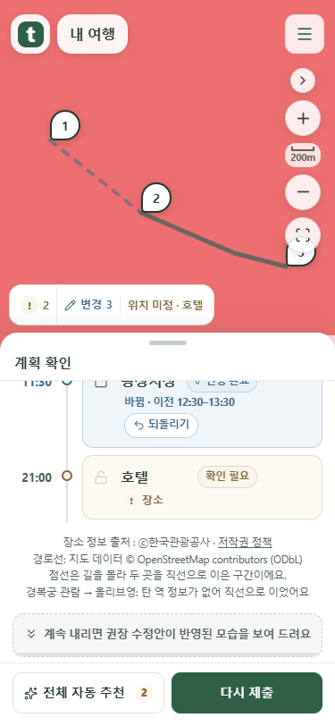
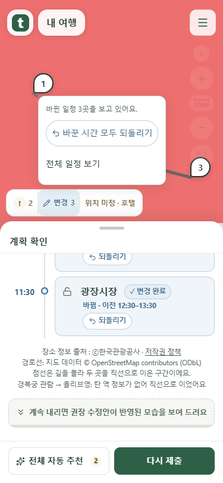
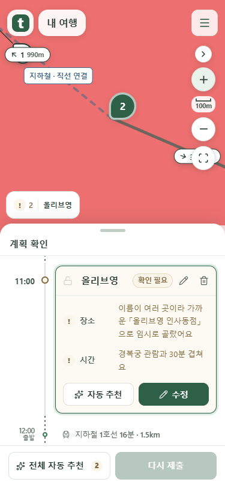
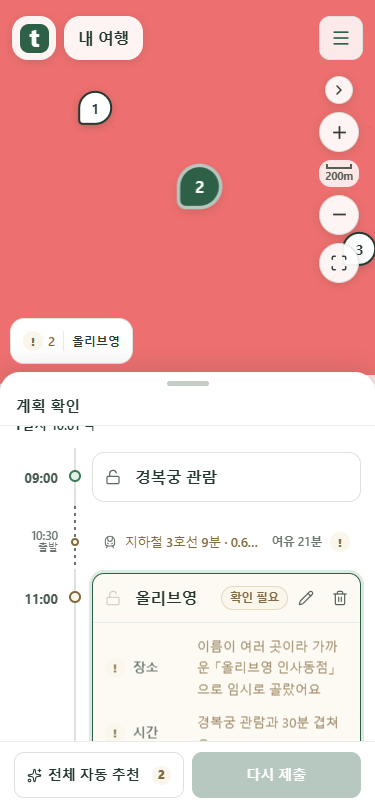
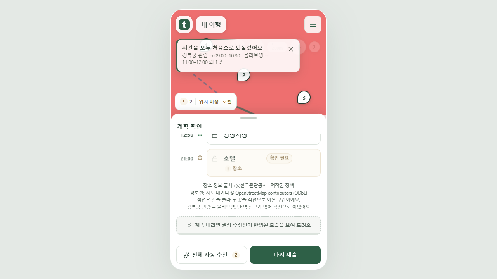

확인·변경·위치 표시를 한곳에 모았습니다
확인이 필요한 개수와 변경 개수를 지도 아래 같은 막대에 붙였습니다. 위치 미정 안내도 같은 높이와 배경을 사용합니다. 바꾼 시간은 ‘변경’을 눌러 모두 되돌릴 수 있습니다.
실제 프론트 화면을 Chrome에서 촬영했습니다. 여행 자료와 단색 지도 배경은 mock 서버 시험용입니다. 공개 서비스에는 아직 배포하지 않았습니다.

같은 막대, 같은 높이 — 변경 개수는 확인 개수 바로 옆

시간 초기화 — ‘변경’ 안에서 한 번에 되돌리기
수단 이름은 경로선 위에 표시합니다
지도 아래의 별도 지하철 태그를 없앴습니다. 확대하면 보이는 경로선 위에 지하철·도보 같은 이름이 나타납니다. 마커나 다른 이름과 겹치는 곳은 피합니다. 직선으로 연결한 구간은 그 사실을 함께 표시합니다.

확대한 선 위에 ‘지하철 · 직선 연결’

마커 선택 — 해당 일정만 열고 중복 알림 제거
PC 화면

시간을 모두 되돌리면 변경 표시도 사라집니다.